版本矩阵模板
矩阵是“我们支持什么、验证过什么”的公开声明
版本矩阵的作用是让“支持范围”变成可执行的清单，而不是模糊的承诺。它同时服务于测试排期、发布判断和事故定位。
1. 建议字段
| 字段 | 说明 | 示例 |
|---|---|---|
| 系统版本 | 最低支持、主流、最新 | 16.x / 17.x / 18.x |
| 设备代际 | 按内存与芯片分组 | 小内存机型 / 主流 / 最新 |
| 架构 | 设备与模拟器 | arm64 设备 / arm64 模拟器 |
| 功能状态 | 已支持 / 降级 / 不支持 | 后台刷新：降级 |
| 验证方式 | 自动 / 手动 / 未测 | 手动 |
| 证据 | 报告或流水线编号 | RUN-2311 |
| 负责人 | 维护该行的人 | — |
| 复核日期 | 下次必须重看的日期 | 系统大版本发布前 |
2. 一个空白模板
| 系统 | 设备组 | 架构 | 关键功能 | 状态 | 验证 | 证据 |
|---|---|---|---|---|---|---|
| 最低支持 | 小内存 | arm64 | 登录 / 同步 | 待填 | 待填 | 待填 |
| 主流 | 主流 | arm64 | 登录 / 同步 | 待填 | 待填 | 待填 |
| 最新 | 最新 | arm64 | 登录 / 同步 | 待填 | 待填 | 待填 |

3. 维护策略
- 系统大版本发布前更新，不等用户反馈。
- 按真实用户分布分配测试比重，老版本仍有大量用户时不能直接放弃。
- 每行要么有证据，要么标“未验证”，不允许留空。
- 删除行时记录原因（例如系统版本停止支持），保留历史以便追溯。
4. 与发布流程的衔接
- 发布单引用矩阵版本号，说明本版覆盖范围。
- 灰度阶段观察新增系统版本的表现，异常时缩小范围。
- 事故复盘时对照矩阵：出问题的组合是否在覆盖范围内，若不在则补入。
矩阵行模板（Markdown 表）
| 系统 | 设备组 | 架构 | 关键功能 | 状态 | 验证 | 证据 |
| --- | --- | --- | --- | --- | --- | --- |
| 最低支持 | 小内存 | arm64 | 登录/同步 | 待填 | 手动 | RUN-000 |未验证要写出来
矩阵里允许“未验证”，但不允许空白：空白会被读成“没问题”。
矩阵里允许“未验证”，但不允许空白：空白会被读成“没问题”。
5. 填写示例
矩阵的一行
| iOS 17.2 | 小内存机型 | arm64 | 登录 / 同步 | 已验证 | 手动 | RUN-014 |
| iOS 18.1 | 主流机型 | arm64e | 登录 / 同步 | 未验证 | — | — |“未验证”也是有效信息：它告诉读者结论的边界在哪里。
6. 常见错误：矩阵维护
| 错误 | 后果 |
|---|---|
| 删行不写原因 | 下一个人重复踩坑 |
| 把“未验证”留空 | 被读成“已验证” |
| 矩阵不随版本更新 | 发布单引用过期结论 |
7. 更新流程
- 新版本发布后，先补一行“待验证”，不要留空。
- 按风险挑三档：最低支持、主流、最新。
- 每档至少验证一次关键功能（登录 + 同步）。
- 验证完把状态改成“已验证”，并附证据编号。
- 删行必须写原因，否则下一个人会重复踩坑。
8. 自测
- 为什么矩阵要包含“未验证”状态，而不是只有通过/失败？
- 用户分布如何影响测试比重的分配？
- 矩阵与发布单之间应如何关联？